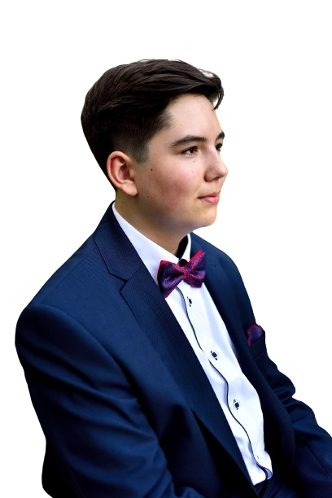

Bartosz Żądło
POZNAJMY SIĘ
NASZ PROGRAM
MEDIA
KONTAKT
KWW
Nasz
Wrocław
lista nr 5!
To czas na twój głos!
Do wyborów zostało:
KWW
Nasz Wrocław
Razem zbudujemy Nasz Wrocław
Bartosz Żądło
Nasz Prezydent Wrocławia

KWW
Nasz Wrocław
Silna rada miasta - Silne miasto
Piotr Błaszczak
Lista nr 5, miejsce 1
do rady miejskiej